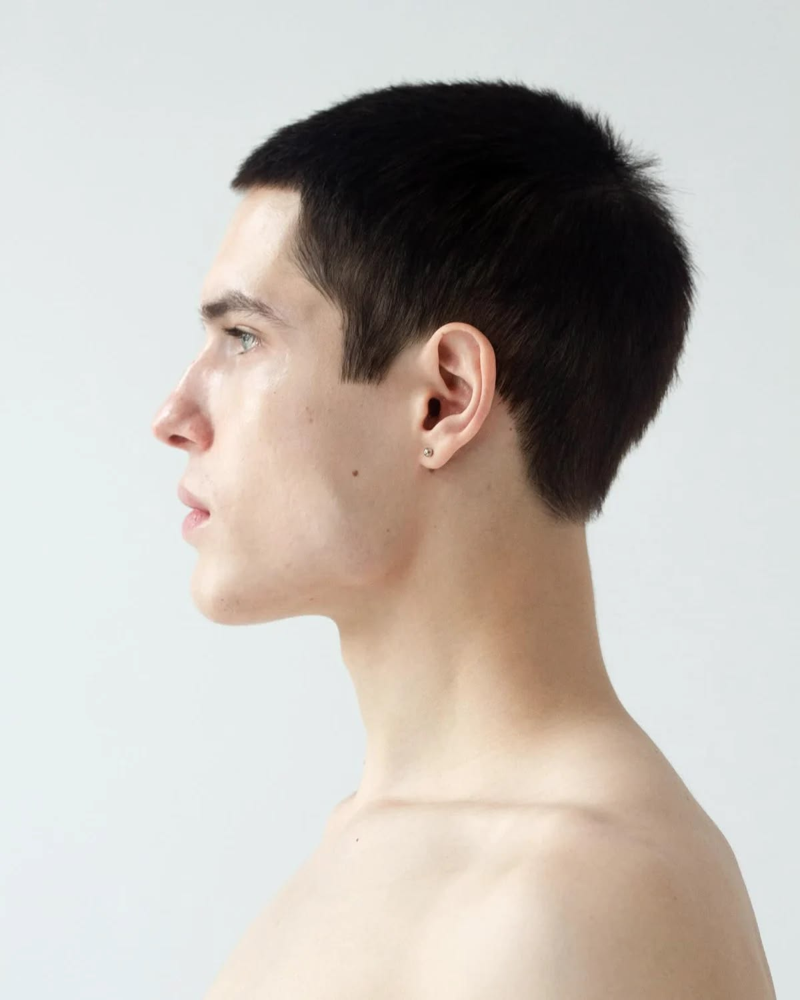
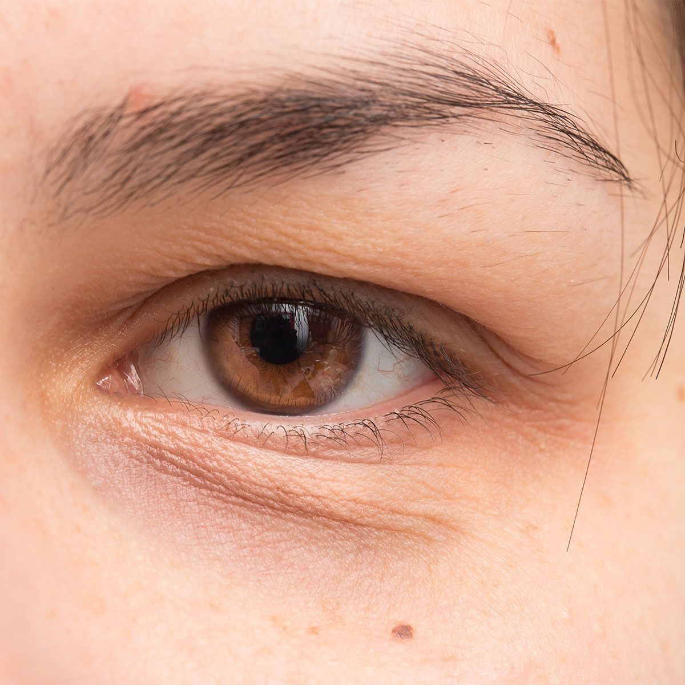
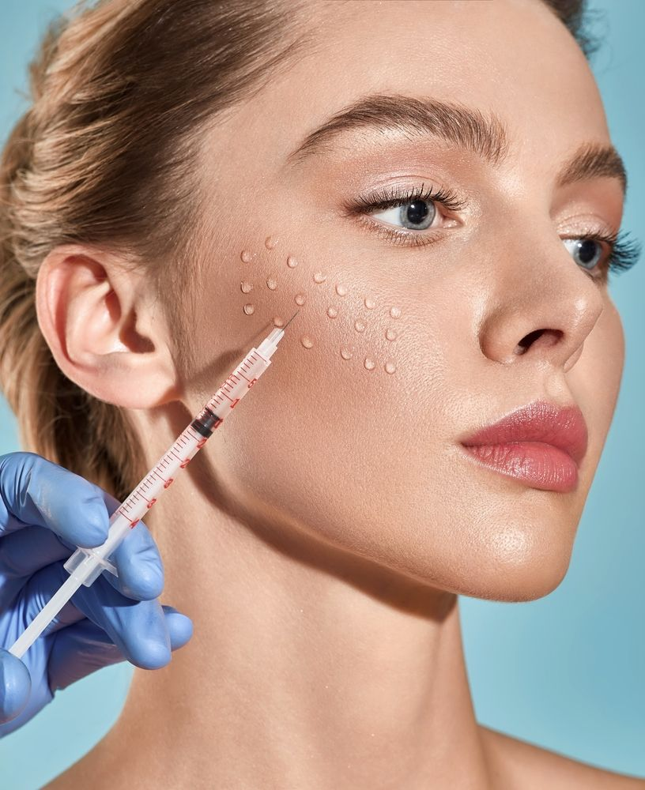
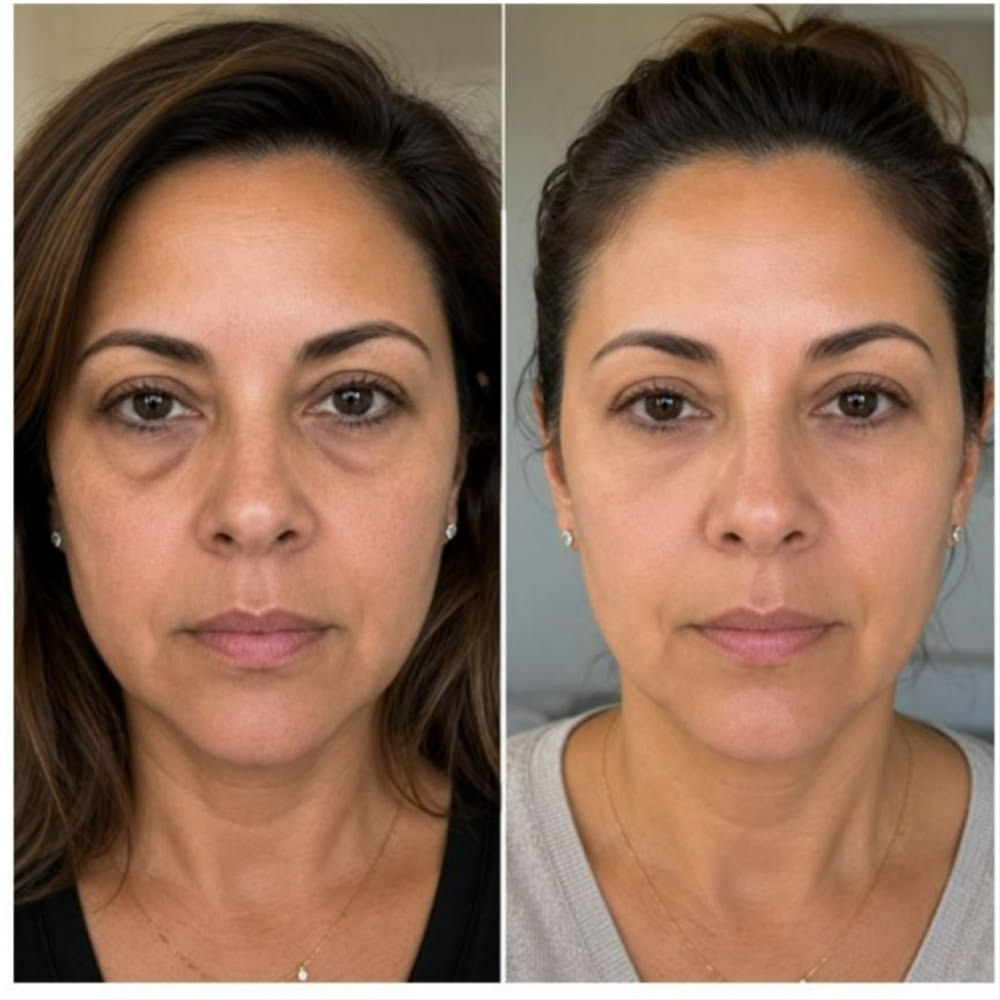
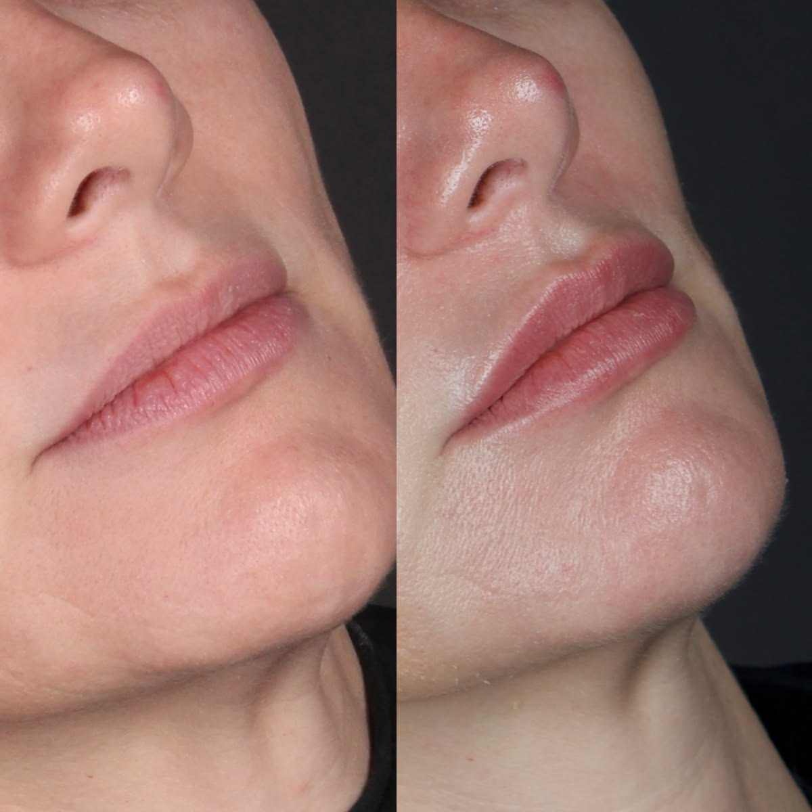

Escuta e avaliação individual
Cirurgiã-dentista · Harmonização orofacial
Sua beleza, respeitando quem você é.
Tratamentos personalizados para valorizar sua expressão, com técnica, escuta e naturalidade em cada escolha.
- Atendimento individualizado
- Planejamento facial
- Naturalidade em primeiro lugar
Planejamento com intenção
Resultados que preservam sua expressão
Orientação antes e depois do atendimento
Procedimentos
Harmonia nos detalhes.
Identidade em primeiro lugar.
Cada indicação começa pela avaliação do seu rosto, das suas necessidades e do resultado que faz sentido para você.
Perfil

Avaliação de proporções para buscar equilíbrio entre nariz, queixo e contornos faciais.
Saiba maisOlheiras

Uma análise cuidadosa da região para indicar a melhor abordagem para cada caso.
Saiba maisRinomodelação
Técnica não cirúrgica indicada após avaliação profissional, com foco em ajustes sutis.
Saiba maisLábios
Contorno, proporção e hidratação respeitando as particularidades da sua anatomia.
Saiba maisHarmonização orofacial

Um planejamento integrado para cuidar de diferentes pontos da face de forma individualizada.
Entenda o processoSobre a Dra. Caroline
Técnica, escuta e um cuidado que não apaga a sua identidade.
A harmonização orofacial começa muito antes de qualquer procedimento. É um processo de observar, conversar, entender expectativas e criar um plano coerente com a sua anatomia e o seu momento.
O objetivo não é mudar quem você é. É valorizar o que já faz parte de você com escolhas seguras, conscientes e individualizadas.
Conversar sobre meu casoO método
Um plano não começa pelo procedimento.
Ele começa por você: suas referências, suas dúvidas e o que você deseja comunicar quando se olha no espelho.
-
01
Escuta
Entendimento das suas expectativas, rotina e principais dúvidas.
-
02
Avaliação
Observação técnica e planejamento individual para cada caso.
-
03
Escolhas conscientes
Indicações explicadas com clareza para que você decida com segurança.
-
04
Acompanhamento
Orientações e cuidados para que cada etapa aconteça com tranquilidade.
Cada rosto tem uma história
Cuidado não é sobre seguir um padrão. É sobre encontrar equilíbrio.
Os procedimentos são definidos somente após uma avaliação presencial e podem variar conforme anatomia, indicação e objetivo individual.




Cada caso possui indicação e evolução individuais. As imagens não representam garantia de resultado.
Dúvidas frequentes
Antes de começar, vamos conversar.
Como funciona a primeira avaliação?+
A consulta é o momento de entender suas expectativas, avaliar possibilidades e conversar sobre uma indicação adequada ao seu caso.
Todo procedimento é indicado para qualquer pessoa?+
Não. A indicação depende da avaliação profissional, do histórico de saúde, da anatomia e do objetivo de cada paciente.
Como saber qual procedimento faz sentido para mim?+
A melhor escolha não vem de uma tendência, mas de uma conversa individual e de um planejamento consciente.
Posso tirar dúvidas pelo WhatsApp?+
Sim. A equipe pode orientar sobre o agendamento e as informações iniciais antes da sua avaliação.
Agende sua avaliação
Um cuidado que começa pela conversa.
Conte brevemente o que você gostaria de entender melhor. A equipe entra em contato para orientar o próximo passo.